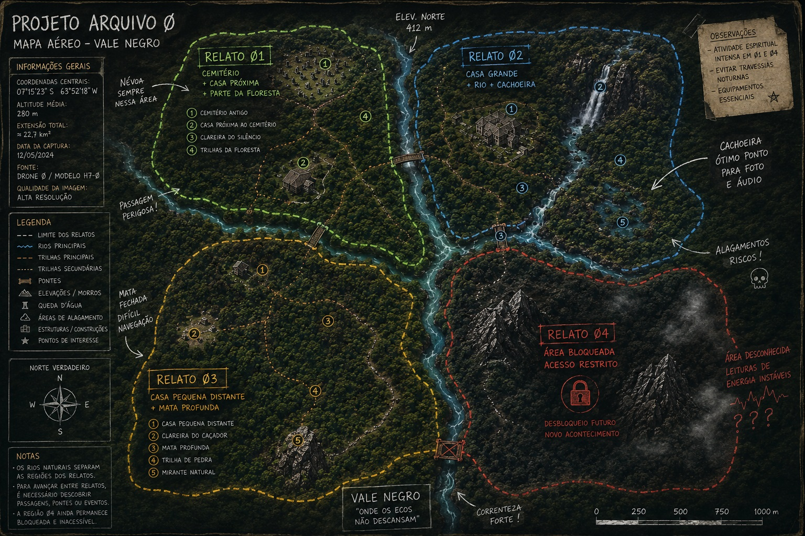
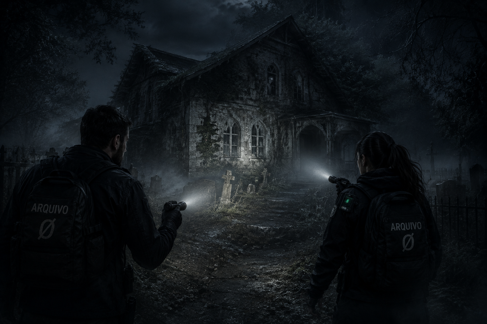
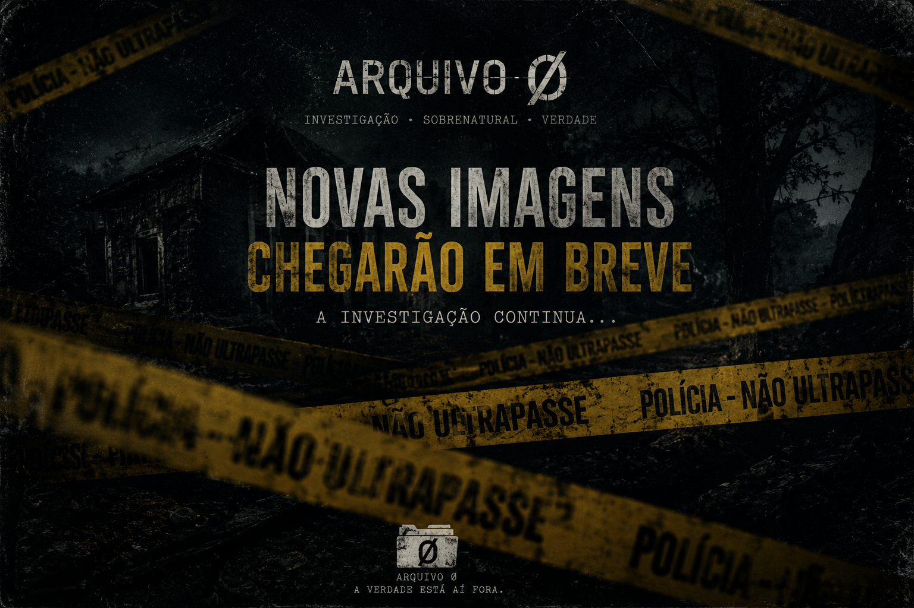

SMASHUP STUDIOS GAMES APRESENTA
ARQUIVO Ø
UM JOGO INVESTIGATIVO DE TERROR
EM DESENVOLVIMENTO
DESENVOLVIDO POR
SMASHUP STUDIOS GAMES
✉ arquivozero.game@gmail.com ⌄SMASHUP STUDIOS GAMES APRESENTA
UM JOGO INVESTIGATIVO DE TERROR
EM DESENVOLVIMENTO
DESENVOLVIDO POR
SMASHUP STUDIOS GAMES
✉ arquivozero.game@gmail.com ⌄ARQUIVO Ø1
Uma experiência de investigação em locais marcados por relatos, desaparecimentos e fenômenos que não deveriam estar ali.
Observe, registre e reúna evidências antes que o ambiente comece a responder à sua presença.
ARQUIVO Ø utiliza iluminação dinâmica, áudio espacial e efeitos atmosféricos para construir ambientes investigativos imersivos. A direção visual combina baixa visibilidade, névoa, granulação, aberrações de imagem e pós-processamento inspirado em gravações analógicas e câmeras VHS.
O ambiente não funciona apenas como cenário. Sons direcionais, alterações de iluminação, manifestações discretas e fenômenos imprevisíveis são utilizados para manter o investigador em constante dúvida sobre aquilo que viu, ouviu ou registrou.
Desenvolvido em Unity, ARQUIVO Ø utiliza sistemas de interação, equipamentos investigativos, diferentes superfícies sonoras, condições climáticas e áudio tridimensional. Cada local é construído para que exploração, observação e registro façam parte da própria investigação.
ARQUIVO Ø1.1
As entidades nem sempre parecem tolerar a presença humana. Há relatos de pessoas que abandonaram determinados locais em estado de pânico, desorientação ou profunda perturbação emocional.
Algumas manifestações parecem reagir diretamente à presença do investigador. Ruídos começam depois que alguém entra em determinado cômodo. Objetos mudam de posição. Passos são ouvidos onde não deveria haver ninguém. Vozes podem surgir à distância, às vezes pronunciando palavras incompreensíveis. Outras vezes, chamando alguém pelo nome.
O problema é que nem toda manifestação parece querer assustar. Como saber?
Algumas assumem comportamentos familiares. Uma voz conhecida. O choro de uma criança. Uma pessoa aparentemente parada no final de um corredor. Algo que desperte curiosidade suficiente para fazer alguém se aproximar.
Há também relatos de uma sensação difícil de explicar: a certeza repentina de que existe alguém no mesmo ambiente, mesmo quando nada pode ser visto.
Em outros casos ocorre o contrário. A pessoa não percebe nada durante a investigação. Somente mais tarde, ao revisar fotografias, gravações ou áudio, encontra algo que não recorda ter visto naquele momento.
E talvez esse seja o aspecto mais inquietante.
Nem sempre sabemos se a entidade está tentando se manifestar... ou se está tentando fazer com que você vá até ela.
Entidades também podem pregar peças. Ora se manifestam como crianças, ora assumem formas aterradoras.
Nem sempre sabemos se a entidade está tentando se manifestar... ou se está tentando fazer com que você vá até ela.
ARQUIVO Ø2
Exploração em primeira pessoa, equipamentos investigativos, fenômenos imprevisíveis, registros fotográficos e ambientes construídos para transformar dúvida em tensão. Se não aguenta, corra.
Monte sua equipe, ou vá sozinho. Pensando melhor, evite andar sozinho.
Utilize equipamentos de última geração. Mas cuidado: leve apenas o necessário.
ARQUIVO Ø3

Ø1 - Rabiscos, primeiros mapas e codificação básica dos movimentos.

Ø2 - Primeira ideia de como iniciar a investigação. O objetivo é: será que seu coração aguenta?

Ø3 - NOVOS ARQUIVOS EM BREVE
ARQUIVO Ø4
ARQUIVO Ø começou como começam algumas das melhores histórias: com uma ideia que se recusou a ir embora.
Somos um pequeno projeto independente construindo uma experiência de investigação sobrenatural onde o medo não depende apenas daquilo que aparece diante de você, mas principalmente daquilo que talvez estivesse ali o tempo todo.
Cada mapa, relato, equipamento, som e manifestação está sendo desenvolvido para provocar uma pergunta simples:
“O que foi isso?”
Não queremos apenas assustar você.
Queremos fazer você parar diante de uma porta e pensar duas vezes antes de abri-la. Queremos que coloque os fones, apague as luzes e comece uma investigação sabendo que alguma coisa pode acontecer... ou absolutamente nada.
E talvez seja justamente essa dúvida que torne o próximo ruído tão perturbador.
O ARQUIVO Ø está sendo construído passo a passo, e estamos abrindo parte desse processo ao público. Mapas ainda serão desenhados. Sistemas serão testados. Ideias serão descartadas. Erros acontecerão. Novos relatos serão adicionados.
Você não chegou depois que tudo ficou pronto.
Você chegou enquanto o arquivo ainda está sendo aberto.
Bem-vindo ao ARQUIVO Ø.
CONTATO Ø
Nossa equipe ficará muito feliz com seu feedback.
Ainda não temos data de lançamento, mas todas as sequências de desenvolvimento serão postadas aqui.
Prefere falar diretamente conosco?
✉ arquivozero.game@gmail.comDESENVOLVIDO POR
SMASHUP STUDIOS GAMES
Hilel Eitan (Hilton Carneiro Almeida)